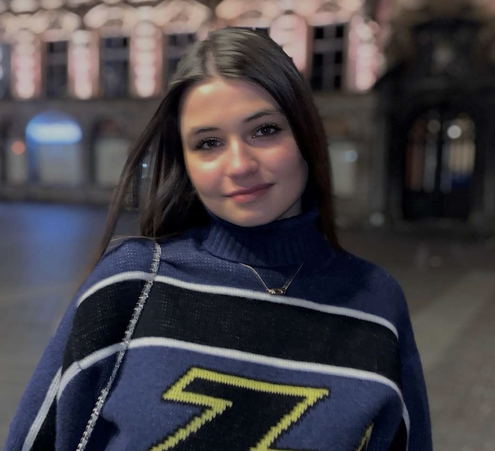
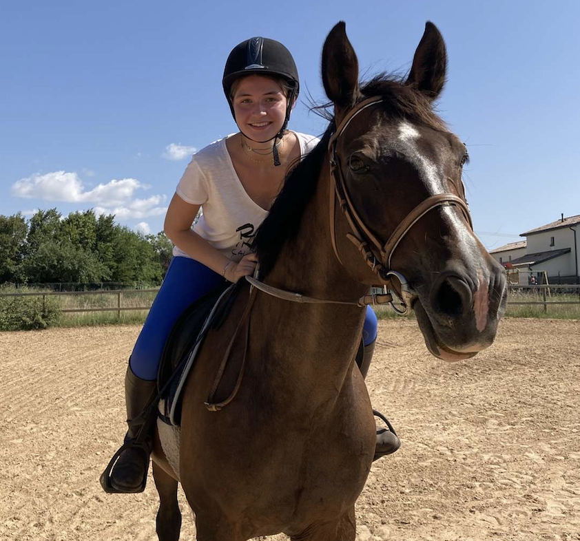
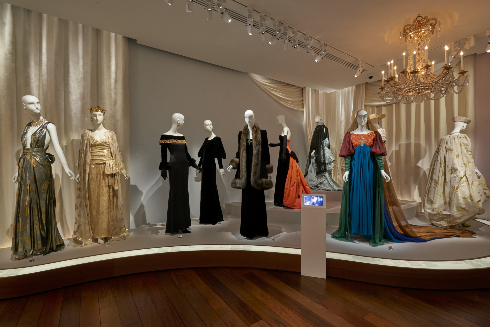

Hello ! I'm Mathilde Brunetaud
Welcome to my website! I hope you are well. My name is Mathilde and today I'm going to share with you my hobbies and tell you a bit more about who I am. Among my passions are sports, horse riding and travelling. I also love fashion and going out with my friends. I invite you to visit my instagram account if you wish ;) ⬇
Discover my InstagramMore information about me 👩🏻
My name is Mathilde Brunetaud, I was born in Lyon on the 26th of July 2003 and I am currently 18 years old. I lived in Lyon all my childhood and I went to Lille to study at the IÉSEG. I have a little brother called Pierre Louis and he is 16 years old. I also have a cat named Diva. I love to travel, I really like the USA and one of my dreams is to live in San Francisco.
One of my favourite hobbies: sport 🐎
I love sport. I have been horse riding since I was 4 years old and since I arrived in Lille I have been running twice a week at the Citadelle of Lille. Sport allows me to take a real break in my week and to take time for myself. As for horse riding, I had to stop when I arrived in Lille but when I go back to Lyon I go to my riding club to ride again. I love horses immensely and hope to have one in the future so I can ride whenever I want. Here is a picture of me and my favourite horse just below. 
My passion for fashion 👗
I love design, everything related to the world of fashion and especially luxury fashion. It's a passion that drives me every day, in the way I dress for example. I would like to work in the fashion industry in the future, in order to express my creativity but also to contribute my knowledge in this field. I really enjoy going to fashion exhibitions. For example, I recently went to the Yves Saint Laurent Museum in Paris, where I was able to see different fashion outfits and several sketches, which confirmed that I would like to work in this sector later on. You can see a picture of the exhibition just below. 